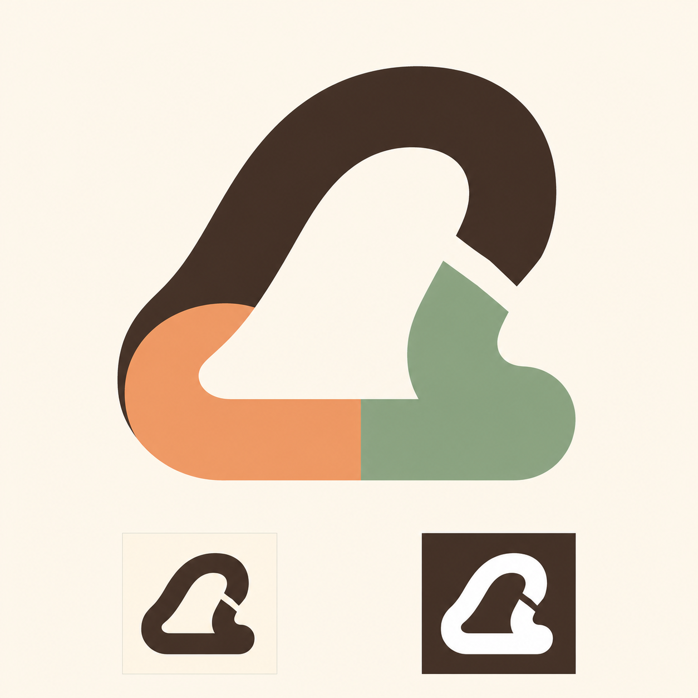
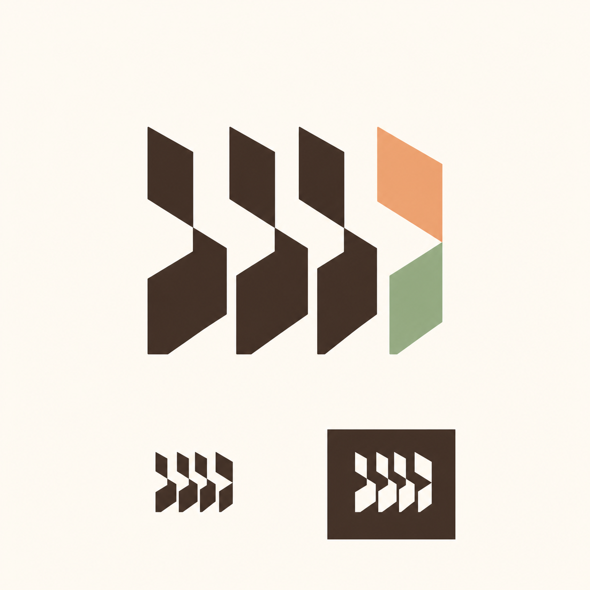
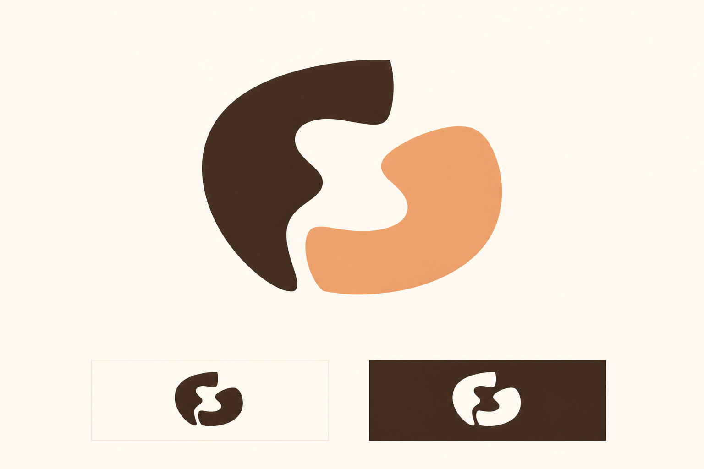

Barber Queue — new logo directions

Expressive route break
One continuous-feeling route with a decisive notch and three-color handoff. The silhouette is the most sculptural of the round.
Ownable asymmetry and generous negative space.
Can read as a hanger, hill, bell, or generic loop; the color pieces and proof redraws are inconsistent.
Soft shading and non-flat cream background despite the flat-color contract.
Good source material if its metaphor resonates with Kiattisak; not the clearest queue story.

Queue rhythm to next state
Four measured units establish a clear turn sequence; the final unit changes to apricot and sage. It communicates the product's operational value fastest.
Best queue semantics, compact construction, and strongest later vector-redraw potential.
Slanted gaps can read as chevrons, fast-forward, logistics, or enterprise workflow rather than a friendly local shop.
Soft shading; final state changes across two pieces instead of one disciplined module.
Advance the system/rhythm idea, then soften and redraw it so it stops reading like arrows or logistics.

Warm complementary exchange
Two pieces share a central negative-space handoff. It feels more human and neighborly than the other directions.
Warmest emotional tone and clear two-party relationship.
Reads as yin-yang, harmony, embrace, or face profiles; the queue/product meaning is weak and the inner neck is fragile at small size.
Visible gradients, halo treatment, and inconsistent proof silhouettes.
Useful emotional reference; weaker as a distinctive operational product mark.